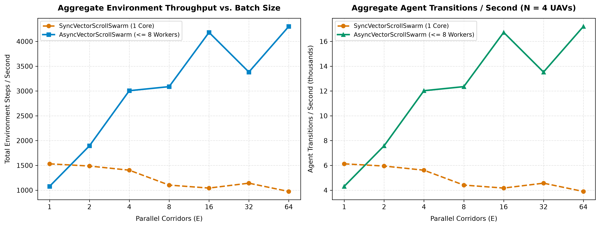

Tutorial 05: Vectorized MARL Execution & Multi-Core Scaling
Modern Multi-Agent Reinforcement Learning (MARL) algorithms (MAPPO, QMIX, MADDPG, Relational GNNs) depend on parallel rollout collection across many independent episodes simultaneously.
This tutorial walks through scrollswarm.vector and explains:
- Why
(E, N)Vectorization Matters: Contrasting CTDE & graph-preserving batching against generic IPPO flattening (SuperSuit). - Synchronous vs. Asynchronous Runners: Choosing between
SyncVectorScrollSwarmand multiprocessAsyncVectorScrollSwarm. - Auto-Reset & Bootstrapping Semantics: Handling
episode_done,alive_mask,final_observation, andfinal_state. - Block-Diagonal GNN Graph Batching: Using
BaseVectorScrollSwarm.batch_graphs()for PyTorch Geometric without cross-corridor edge leakage. - Empirical Multi-Core Benchmarks: Measuring pure environment throughput across \(\mathcal{E} \in \{1, 2, 4, 8, 16, 32, 64\}\) corridors and analyzing the IPC crossover point.
1. Why Preserving (E, N) Structure Matters for CTDE & GNNs
Standard PettingZoo-to-Gymnasium vector wrappers (such as supersuit.pettingzoo_env_to_vec_env_v1 + concat_vec_envs_v1) flatten \(\mathcal{E}\) corridors of \(N\) drones into a single flat axis (E * N, 16). While suitable for decentralized Independent PPO (IPPO), flattening breaks two foundational ScrollSwarm abstractions:
- CTDE Centralized Critics: Algorithms like MAPPO and QMIX require the true joint global state
(E, 16 * N)plus per-agent liveness masks(E, N)— neither of which is exposed by Gymnasium's standardVecEnv. - Relational Communication Graphs: Graph policies require per-corridor adjacency matrices
(E, N, N)or block-diagonal COOedge_indextensors so Drone \(i\) in Corridor \(e\) never exchanges messages with drones in Corridor \(e'\).
scrollswarm.vector preserves explicit (E, N, ...) swarm dimensions on every reset() and step().
2. Synchronous vs. Asynchronous Vector Runners
flowchart TD
TRAINER["<b>MARL Rollout Loop / Policy</b><br/>Submits batched actions (E, N)"]
SYNC["<b>SyncVectorScrollSwarm</b><br/>Single Process / 1 CPU Core<br/>Zero IPC Overhead"]
ASYNC["<b>AsyncVectorScrollSwarm</b><br/>Multiprocess spawn Context<br/>Shards E Corridors across W Workers"]
CPP["<b>C++20 Geometry Kernel</b><br/>0.0s JIT Warmup per Worker"]
TRAINER --> SYNC
TRAINER --> ASYNC
SYNC --> CPP
ASYNC --> CPP
classDef topStyle fill:#1a2332,stroke:#38bdf8,stroke-width:1.5px,color:#f1f5f9;
classDef syncStyle fill:#1a2332,stroke:#f59e0b,stroke-width:1.5px,color:#f1f5f9;
classDef asyncStyle fill:#1a2332,stroke:#34d399,stroke-width:1.5px,color:#f1f5f9;
classDef kernelStyle fill:#111827,stroke:#818cf8,stroke-width:1.5px,color:#f1f5f9;
class TRAINER topStyle;
class SYNC syncStyle;
class ASYNC asyncStyle;
class CPP kernelStyle;SyncVectorScrollSwarm: Steps all \(\mathcal{E}\) corridors sequentially in the main Python process. Best for unit testing, debugging, and very small batch sizes (\(\mathcal{E} = 1\)).AsyncVectorScrollSwarm: Spawnsnum_workersOS worker processes using Python's cross-platformspawncontext, evenly shardingnum_envsacross workers. PairingAsyncVectorScrollSwarmwithbackend="cpp"avoids Numba's per-worker JIT warmup lag across spawned processes.
3. Batched Rollout Loop & Auto-Reset Bootstrapping
When any corridor \(e\) finishes (either every UAV collides or step_count >= max_cycles), scrollswarm.vector resets corridor \(e\) inside the same step() call so the remaining \(\mathcal{E} - 1\) corridors never stall:
obs[e]immediately contains the new episode's initial observations (alive_mask[e]becomes allTrue).infos["episode_done"][e]is set toTrue.infos["final_observation"][e]andinfos["final_state"][e]store the terminal step's post-step vectors so on-policy GAE critics can distinguish time-limit truncation (truncations[e]) from collision termination (terminations[e]) without corrupted bootstrap targets.
import numpy as np
from scrollswarm import AsyncVectorScrollSwarm
with AsyncVectorScrollSwarm(
num_envs=8,
num_workers=4,
num_agents=4,
max_cycles=500,
comm_topology="chain",
backend="auto",
) as vec_env:
obs, infos = vec_env.reset(seed=42)
# obs: (8, 4, 16), infos["state"]: (8, 64), infos["alive_mask"]: (8, 4)
for step_idx in range(200):
actions = vec_env.action_space.sample() # shape (8, 4)
obs, rewards, terminations, truncations, infos = vec_env.step(actions)
# Handle GAE bootstrapping when any corridor auto-resets
if np.any(infos["episode_done"]):
done_ids = np.where(infos["episode_done"])[0]
terminal_states = infos["final_state"][done_ids]
terminal_obs = infos["final_observation"][done_ids]
4. Block-Diagonal Graph Batching for PyTorch Geometric
Both SyncVectorScrollSwarm and AsyncVectorScrollSwarm return dense (E, N, N) adjacency and (E, N, N, 3) spatial edge features in infos["adj"] and infos["edge_attr"]. To pass all \(\mathcal{E}\) dynamic swarm graphs into a GNN forward pass simultaneously, call BaseVectorScrollSwarm.batch_graphs():
from scrollswarm import SyncVectorScrollSwarm, BaseVectorScrollSwarm
with SyncVectorScrollSwarm(num_envs=4, num_agents=5, comm_topology="radius") as vec_env:
obs, infos = vec_env.reset(seed=7)
actions = vec_env.action_space.sample()
obs, rewards, terms, truncs, infos = vec_env.step(actions)
# Flatten (E, N, 16) node features -> (E * N, 16)
node_features = obs.reshape(-1, 16)
# Convert (E, N, N) graphs -> block-diagonal COO batch (zero corridor leakage)
edge_index, edge_attr, batch = BaseVectorScrollSwarm.batch_graphs(
infos["adj"], infos["edge_attr"]
)
print("Node features:", node_features.shape) # (20, 16)
print("edge_index: ", edge_index.shape) # (2, E_total)
print("edge_attr: ", edge_attr.shape) # (E_total, 3)
print("batch ptr: ", batch.shape) # (20,)
Every node in corridor \(e\) receives index offset \(e \cdot N\), ensuring dead-agent pruning and dynamic RADIUS topologies remain strictly isolated per environment.
5. Empirical Vector Scaling Benchmark (Pure Environment Stepping)
The script scripts/benchmark_vector.py measures pure environment stepping throughput (zero neural-network overhead) across corridor batch sizes \(\mathcal{E} \in \{1, 2, 4, 8, 16, 32, 64\}\):
Benchmark Results
The following results were obtained on a personal workstation with the following specs:
- CPU: Intel Core i7-11850H @ 2.50 GHz, 8 cores, 16 threads
- RAM: 32 GB
- Geometry backend:
cpp(backend="auto") - Num agents per corridor (\(N\)): 4
- Steps per configuration: 400 (
warmup=20,max_workers=8)

| Batch Size (\(\mathcal{E}\)) | Total UAVs (\(\mathcal{E} \cdot N\)) | Sync (env-steps/s) | Async (env-steps/s) | Async (agent-steps/s) | Async Batch Latency | Async vs. Sync |
|---|---|---|---|---|---|---|
| \(\mathcal{E} = 1\) | 4 | 1,531.4 | 1,078.0 | 4,311.9 | \(0.928\text{ ms}\) | \(0.70\times\) |
| \(\mathcal{E} = 2\) | 8 | 1,487.2 | 1,894.2 | 7,576.8 | \(1.056\text{ ms}\) | \(1.27\times\) |
| \(\mathcal{E} = 4\) | 16 | 1,403.3 | 3,006.1 | 12,024.5 | \(1.331\text{ ms}\) | \(2.14\times\) |
| \(\mathcal{E} = 8\) | 32 | 1,102.9 | 3,088.3 | 12,353.0 | \(2.590\text{ ms}\) | \(2.80\times\) |
| \(\mathcal{E} = 16\) | 64 | 1,043.0 | 4,182.1 | 16,728.3 | \(3.826\text{ ms}\) | \(4.01\times\) |
| \(\mathcal{E} = 32\) | 128 | 1,141.6 | 3,382.2 | 13,528.8 | \(9.461\text{ ms}\) | \(2.96\times\) |
| \(\mathcal{E} = 64\) | 256 | 973.8 | 4,301.3 | 17,205.1 | \(14.879\text{ ms}\) | \(4.42\times\) |
Key Systems Insights
- The IPC Crossover at \(\mathcal{E} = 1\) vs. \(\mathcal{E} \ge 2\): At \(\mathcal{E} = 1\),
SyncVectorScrollSwarm(\(1,531\text{ env-steps/s}\)) outperformsAsyncVectorScrollSwarm(\(1,078\text{ env-steps/s}\)) becausePipeIPC serialization costs \(\approx 0.28\text{ ms/step}\) — comparable to the C++20 corridor step itself. As soon as \(\mathcal{E} \ge 2\), parallel CPU execution outweighs IPC overhead. - Multi-Core Throughput Scaling: On a single core,
SyncVectorScrollSwarmplateaus near \(\sim 1,000\text{–}1,500\) aggregate env-steps/s regardless of \(\mathcal{E}\). Sharding across 8Asyncworkers drives pure environment collection up to \(4,301.3\text{ env-steps/s}\) (\(17,205.1\text{ agent-steps/s}\)) at \(\mathcal{E} = 64\) — a \(4.42\times\) speedup overSync(bounded by Python object/serialization overhead rather than raw geometry compute). - Why Neural Training Amplifies This Further: In an actual PyTorch PPO/GNN loop, stepping \(\mathcal{E} = 16\text{–}64\) corridors supplies
(64, 4, 16)/256-node batches in a single tensor evaluation (\(14.9\text{ ms}\) env step), amortizing PyTorch kernel-launch latency alongside multi-core environment stepping.
6. Runner Selection Matrix
| Use Case | Recommended Runner | Rationale |
|---|---|---|
| Single-Corridor Debugging / Rendering | ScrollSwarmEnv |
Direct PettingZoo ParallelEnv access and Pygame display. |
| Small-Batch Prototyping (\(\mathcal{E} \le 2\)) | SyncVectorScrollSwarm |
Zero spawn startup latency and zero IPC overhead. |
| Multi-Core MARL Training (\(\mathcal{E} \ge 4\)) | AsyncVectorScrollSwarm(..., backend="cpp") |
Scales across CPU cores with 0.0s per-worker JIT warmup. |
Next Steps
- Consult the Vectorized Environments API Reference for full signatures of
BaseVectorScrollSwarm,SyncVectorScrollSwarm, andAsyncVectorScrollSwarm. - Combine
batch_graphs()with Tutorial 03: PyG & GNN Integration to run batched GNN message passing across parallel corridors.